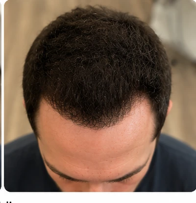

What is hairline powder for men?
Hairline powder for men is a fine cosmetic micro-powder that covers a receding, patchy, or thinning hairline to create a fuller-looking, more defined edge in seconds. You press the powder along the hairline and into any sparse spots, and it clings to and blends with your existing hair so the gaps read as denser coverage. The same powder doubles as a bald spot concealer powder for men: it works anywhere you still have some hair, including the crown and temples. It is a surface cosmetic, not a treatment, so it changes how the hairline looks, not how it grows. MELD is a hairline powder built for men who want a clean, natural-looking edge that holds through sweat and a long day and washes out with any shampoo. It applies in seconds and comes in four shades to blend with your hair color.
The hairline is the hardest zone to get right. It is the most visible part of your hair, it frames your face, and any product that sits heavy or shows a hard line gives the game away instantly. A good hairline powder has to do the opposite: soften the edge, fill the gaps, and disappear into your own hair under normal light.
This is also the most-searched use case in the category. Men look for "hairline powder for men," "bald spot concealer powder for men," and "powder for a receding hairline" because the hairline and crown are where thinning shows first. MELD is built for exactly these zones.
What hairline powder covers
Hairline powder covers the specific spots where men see thinning first: a receding hairline, a widow's peak that has deepened, uneven or patchy edges, sparse temples, and small bald spots on the crown. It works on any area that still has some hair for the powder to cling to, building visual density so scalp stops showing through. It will not cover a fully bald, smooth area with no hair at all, because there is nothing for the micro-powder to blend into. For everything short of that, including the early-to-mid stages of male-pattern thinning, it covers the gap and gives a defined, fuller-looking edge. You control the coverage by building in light layers, so you can fill a faint thinning zone or a more visible bald spot with the same jar.
- Receding hairline: rebuild a softer, fuller front edge and play down a deepening widow's peak
- Bald spots on the crown: fill a thinning vertex so scalp stops showing under overhead light
- Sparse temples: square up the corners so a fresh cut looks its age
- Patchy edges: even out an uneven hairline after a cut or as thinning starts
- Diffuse thinning: add density across the top for fine-haired men

How MELD hairline powder works
MELD works by depositing a fine micro-powder onto the hairline and the hair around it. The powder clings to and blends with your existing hair, adding the visual weight of real hair so a sparse or receding edge reads as full coverage. Nothing bonds to the hair shaft and nothing reaches the scalp at a biological level: it is a surface cosmetic, like mascara for your hairline. Because the powder matches the density and color of real hair, the eye stops seeing scalp through the gaps and the hairline looks defined again. You press it on with the built-in applicator, it sets in place, and the coverage stays put through sweat and a full day until you choose to shampoo it out. There is no waiting, no spray, and no residue once you wash it away.
Meldfuse™ is our name for the way MELD's fine micro-powder clings to and blends with your existing hair for a long-lasting, sweat-resistant hold. It is not an ingredient and not a chemical bond: it is the behavior of a finely milled powder pressed into the right place. On the hairline, where movement, sweat, and a hat all conspire against coverage, the hold is the whole game.
That hold is why MELD works on a hairline and not just a flat crown. The front edge takes the most abuse from a forehead that sweats, a brow that moves, and a cap that rubs. Meldfuse™ keeps the coverage where you pressed it, without pilling or lifting, and without transferring onto your hat band or pillow after a normal day.
How to apply hairline powder for a natural edge
To apply hairline powder, start with dry, styled hair, load the built-in applicator with powder, and press it lightly along the hairline and into any thin spots. The key to a natural front edge is restraint: build in light layers, start a few millimetres behind the very front of the hairline rather than painting a hard line, and pat with a fingertip to feather the powder into surrounding hair. Work from the existing hair outward toward the gap so the coverage fades in instead of stopping abruptly. Check the result in normal daylight, not harsh bathroom downlight, and add a light second pass only where you need it. To remove, wash with any shampoo and it rinses out completely with no residue.
- Start dry and styled. Apply after styling on dry hair. The powder will not feather evenly on damp hair.
- Keep the front edge soft. Begin pressing slightly behind the very front of the hairline. A soft, broken edge looks real; a hard painted line does not.
- Build in light layers. Press a little, check, then add more. It is much easier to add coverage than to take it away.
- Feather with a fingertip. Lightly pat the edges so the powder blends into the hair around the gap with no visible coverage line.
- Check in daylight. Step into normal light and touch up only where needed. Done in seconds.
Bald spot concealer powder for men: crown and temples
The same MELD powder that defines a hairline is a bald spot concealer powder for the crown and temples. The crown is often the first place men notice thinning because they cannot see it directly: it shows up in a photo or a passing reflection. A density powder fills that vertex so scalp stops glaring through under overhead light.
For a crown spot, the technique is slightly different from the hairline. You are filling an open area rather than defining an edge, so you can press a fuller dose into the center of the thin spot and then feather outward. Because you cannot see the back of your own head clearly, use a hand mirror against a bathroom mirror, or your phone's front camera, to check the blend.
Temples respond well to a light touch. A small amount of powder pressed into the corners restores the square frame a fresh cut is supposed to have. Over-applying at the temples is the most common mistake, so go light and build up.
MELD vs other hairline and bald spot products
For the hairline specifically, the main alternatives to a density powder are hair fibers and other powder concealers. Hair fibers, such as Toppik, are keratin protein fibers shaken onto thinning hair and often locked with a setting spray, which can be harder to control on a precise front edge. A powder you press into place, like MELD, gives you more control over a soft, broken hairline. The table compares MELD against the two most-searched alternatives, Toppik and Hairo, on the points that matter for hairline and bald spot work: control, hold, removal, shades, and the guarantee. We have stated only what each brand publishes about itself, so you can decide on facts rather than marketing.
| For hairline + bald spots | MELD | Toppik | Hairo |
|---|---|---|---|
| Format | Press-on micro-powder | Shake-on keratin fibers | Powder concealer |
| Control on a precise edge | Press, build, feather | Shake + set spray | Press-on |
| Sweat-resistant, long-lasting hold | Yes (Meldfuse™) | Resists wind, rain, perspiration | Yes |
| Washes out with shampoo | Yes | Yes | Yes |
| Shades offered | 4 | 9 | 9 |
| Money-back guarantee | 60 days | 30 days, direct only | 60 days, returns shipping on you |
| Free shade swap | Yes | No | Yes |
Competitor details reflect each brand's own published claims and policies as of June 2026. Toppik markets that its keratin fibers "resist wind, rain, and perspiration" with a 30-day money-back guarantee on direct purchases. Hairo markets a long-hold powder with a 60-day return window where the customer pays return shipping. We do not repeat any claim we cannot stand behind for MELD.
For deeper comparisons, see our Toppik alternative guide and the MELD vs Hairo head-to-head. For the full category overview, start with our hair density filler for men guide.
What men are saying
"It makes my hair look denser without looking fake, and the application is super easy. It has become one of those products I don't leave the house without."
Nathan L., Denver
Common questions about hairline powder
Will it look obvious on my hairline?
Not if you apply it the way it is designed to be used. MELD is a fine micro-powder that blends with your hair color and adds the visual weight of real hair, so it is virtually undetectable in normal daylight. The hairline is unforgiving, so the technique matters: keep the front edge soft, start slightly behind the very front, and build in light layers. Matched correctly to your shade, it reads as a fuller version of your own hairline rather than a product sitting on top.
Can it cover a fully bald spot?
It can cover a thinning or sparse spot where some hair remains, which is most bald spots in the early-to-mid stages. It cannot cover a completely smooth, hairless area, because the micro-powder needs existing hair to cling to and blend into. If you are not sure whether your spot has enough coverage to work with, email us a photo and we will tell you straight before you buy.
Does it survive sweat and a hat?
Yes. The Meldfuse™ hold is sweat-resistant and long-lasting, built to survive a workout, a humid day, and a cap. It holds without pilling or lifting and does not transfer onto a hat band after a normal day. When you want it off, any shampoo removes it completely.
How do I pick the right shade?
Match the powder to your current hair color at the hairline. MELD comes in four shades designed to blend, and when you are between two, the lighter option usually gives a more natural result on a hairline. If you guess wrong, our Free Shade Swap ships you the correct shade at no cost, so getting the match right is on us.
What if it is not right for me?
Every order is backed by a 60-day money-back guarantee. If MELD does not work for your hairline, you are covered. And because shade is the most common reason a first try disappoints, the Free Shade Swap usually solves it before a refund is ever on the table.